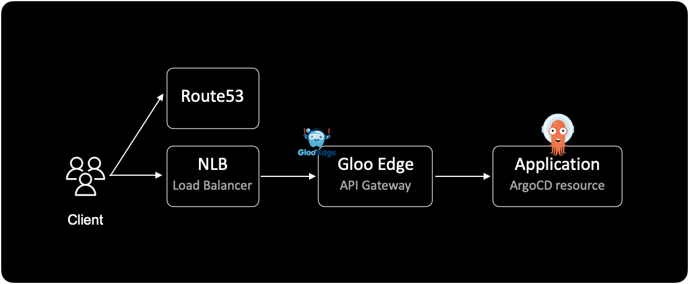
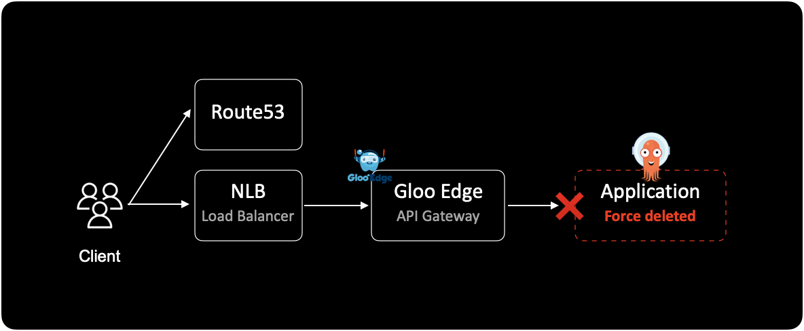
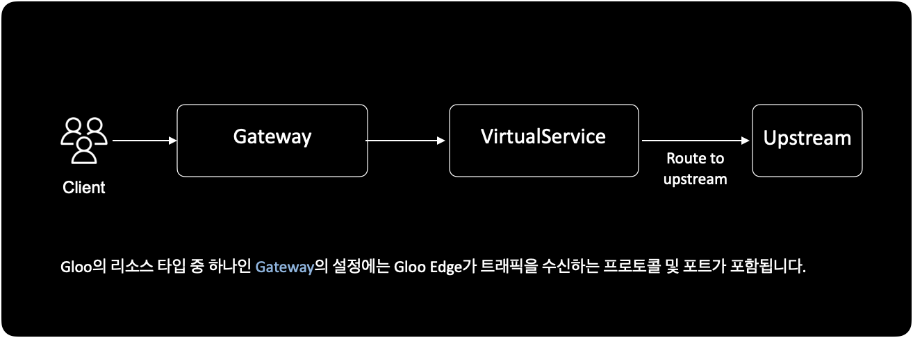
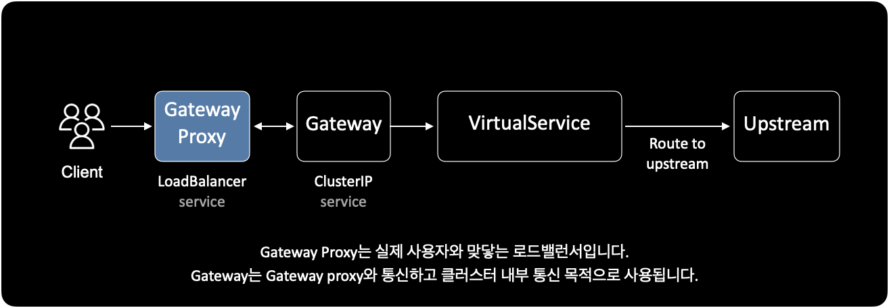

Gloo 환경에서 ArgoCD 리소스 삭제
개요
API Gateway로 Gloo Edge를 사용하는 인프라 환경에서는 ArgoCD의 ApplicationSet 리소스를 삭제할 때 주의해야 합니다.
Gloo Edge에서 먼저 Application과 연관된 라우트를 제거하고, Gloo의 웹훅 설정을 비활성화한 다음, ArgoCD에서 Application 또는 ApplicationSet을 삭제해야 합니다.
환경
Gloo Edge를 통해 들어오는 유저의 Inbound traffic flow는 다음과 같이 진행됩니다.
이 가이드에서는 AWS에서 운영되는 쿠버네티스 환경이라고 가정하겠습니다.

문제와 영향
Gloo Edge는 무시하고 ArgoCD에서만 Application을 삭제하게 될 경우 서비스가 영향 받게 됩니다.
Gloo에서 미리 webhook을 끄고 Route를 제거하지 않은 상태에서 ArgoCD의 Application을 강제 삭제하게 될 경우, 다음과 같은 문제가 발생하게 됩니다.
- (ArgoCD 웹에서 볼 떄) Application에 있는 Upstream 리소스만 삭제되지 않고 남아있게 됩니다.
- gloo는 설정된 라우팅에 따라 사용자를 백엔드의 Application으로 연결해주지만, 실제 백엔드의 application은 이미 삭제된 상태입니다. 결국 사용자의 세션은 장애 영향을 받게 됩니다.

조치방법
그러면 어떻게 해야 안전하게 ArgoCD의 Application(Set)을 지울 수 있을까요?
방법은 Gloo Edge에서 연관된 route를 제거하고, 웹훅 기능을 비활성화한 다음에 ArgoCD에서 Application(Set)을 제거하면 됩니다.
상세절차
Gloo Edge를 API Gateway로 쓰는 환경에서 ArgoCD의 application(set)을 삭제하는 절차는 다음과 같이 진행됩니다.
(1) Gloo에서 해당 Application들이 연결되어 있는 Route를 먼저 제거합니다.
(2) Gloo에서 Webhook 기능을 비활성화합니다. Gloo 공식문서
Gloo에서는 settings 리소스를 통해 잘못된 리소스를 거부하도록 웹훅을 구성할 수 있습니다.
gloo의 CRD인 settings의 스펙을 확인합니다.
settings 커스텀 리소스는 모든 Gloo Edge 컨테이너에 대한 전역 설정을 담당합니다.
$ kubectl get settings default \
-n gloo-system \
-o yaml
결과값은 다음과 같습니다.
spec:
consoleOptions:
apiExplorerEnabled: true
readOnly: false
...
gateway:
readGatewaysFromAllNamespaces: false
validation:
allowWarnings: false
# alwaysAccept: false = webhook "enabled"
# alwaysAccept: true = webhook "disabled"
# -> ready to delete application via ArgoCD
alwaysAccept: true
disableTransformationValidation: false
proxyValidationServerAddr: gloo:xxxx
validationServerGrpcMaxSizeBytes: 1234567
warnRouteShortCircuiting: true
...
alwaysAccept 설정값
- gloo의 웹훅 기능은
settings리소스의spec.gateway.validation.alwaysAccept설정값에 따라 유효성 검사를 엄격하게 할지, 허용할지 결정됩니다. spec.gateway.validation.alwaysAccept값을true로 변경하면 gloo의 웹훅 기능이 비활성화 됩니다.- 기존에
alwaysAccept: false설정으로 Gloo를 운영중이었다면 이 과정은 건너뛰어도 됩니다.
(3) 이제 ArgoCD 웹에서 Application을 삭제(delete)합니다.
(4) 이후 다시 Gloo 웹훅 설정을 원래대로 돌려놓습니다.
$ kubectl get settings default \
-n gloo-system \
-o yaml
spec:
consoleOptions:
apiExplorerEnabled: true
readOnly: false
...
gateway:
readGatewaysFromAllNamespaces: false
validation:
allowWarnings: false
# alwaysAccept: false = webhook "enabled"
# alwaysAccept: true = webhook "disabled"
alwaysAccept: false
disableTransformationValidation: false
proxyValidationServerAddr: gloo:xxxx
validationServerGrpcMaxSizeBytes: 1234567
warnRouteShortCircuiting: true
...
alwaysAccept 값을 true에서 false로 다시 돌려놓았습니다.
Gloo 리소스: Upstream
upstream은 gloo에서 사용하는 대표적인 리소스 타입입니다.
upstream을 간단하게 설명하자면 라우팅을 받는 특정 kubernetes 서비스를 나타내는 단위입니다.

Gloo Edge에서 사용하는 주요 리소스에는 Gateway, VirtualService, Upstream이 있습니다.
더 자세한 내용은 공식문서
Gloo Edge Configuration를 참고하세요.
공식문서는 대다수의 블로그이나 스택 오버플로우의 글과는 다르게 최신 정보나 변경사항 또는 함수의 구조 등에 대해 매우 정확하게 확인할 수 있는 가장 확실한 경로입니다.
어떤 정보에 대해 확신이 들지 않고 의심이 간다면 무조건 공식문서를 찾아 보는 습관은 중요합니다.
사용자와 맞닿는 로드밸런서인 Gateway Proxy와 내부 클러스터용 Gateway를 구분해서 사용하도록 구성할 수 있습니다.

이 때 Gateway와 Gateway Proxy의 실체는 쿠버네티스의 service 리소스입니다.
$ kubectl get svc \
-n gloo-system \
-l 'app=gloo'
NAME TYPE CLUSTER-IP EXTERNAL-IP PORT(S) AGE
...
gateway ClusterIP 11.222.333.444 <none> 443/TCP 123d
gateway-proxy LoadBalancer 11.222.333.44 k8s-gloosyst-xxxxxxxx-xxxxxxxxx-xxxxxxxxxxxxxxxxx.elb.ap-northeast-2.amazonaws.com 80:11111/TCP,443:22222/TCP 123d
...
인프라 구성 환경에 따라 다르겠지만 일반적으로 Gloo의 Upstream 리소스는 Gloo System에 하나, ArgoCD Application 안에 하나. 각 어플리케이션마다 2개씩 한 쌍으로 존재하게 됩니다.
VirtualService 리소스는 설정된 라우팅 룰에 따라 어떤 Upstream으로 사용자 트래픽을 보낼 지 결정하는 역할을 합니다.
쿠버네티스 클러스터에서 Gloo에서 사용하는 API 리소스를 확인하는 방법입니다.
$ # Currently connected to the EKS cluster.
$ kubectl api-resources
NAME SHORTNAMES APIVERSION NAMESPACED KIND
... ... ... ... ...
gateways gw,ggw gateway.solo.io/v1 true Gateway
httpgateways hgw,ghgw gateway.solo.io/v1 true MatchableHttpGateway
routeoptions rto,rtopts,grto gateway.solo.io/v1 true RouteOption
routetables rt,grt gateway.solo.io/v1 true RouteTable
virtualhostoptions vho,vhopts,gvho gateway.solo.io/v1 true VirtualHostOption
virtualservices vs,gvs gateway.solo.io/v1 true VirtualService
proxies px,gpx gloo.solo.io/v1 true Proxy
settings st,gst gloo.solo.io/v1 true Settings
upstreamgroups ug,gug gloo.solo.io/v1 true UpstreamGroup
upstreams us,gus gloo.solo.io/v1 true Upstream
... ... ... ... ...
Gateway, VirtualService, Upstream 외에도 Gloo에서 사용하는 리소스가 다양하게 있는 걸 확인할 수 있습니다.
아래는 Upstream 리소스의 샘플 yaml manifest입니다.
apiVersion: gloo.solo.io/v1
kind: Upstream
metadata:
annotations:
kubectl.kubernetes.io/last-applied-configuration: >
...
creationTimestamp: '2022-07-21T05:24:09Z'
generation: 2
labels:
argocd.argoproj.io/instance: hello-greeter-beta1-dev-a
discovery.solo.io/function_discovery: enabled
name: hello-greeter-beta1-http
namespace: hello-greeter
resourceVersion: '123456789'
uid: 9f1367cf-b07a-42df-8780-76f821bf0172
spec:
kube:
serviceName: hello-greeter-beta1-blue
serviceNamespace: hello-greeter
servicePort: 80
status:
statuses:
gloo-system:
reportedBy: gloo
state: 1
결론
API Gateway로 Gloo Edge를 사용하는 환경에서 ArgoCD의 Application(Set)을 삭제할 때는 Gloo에서 몇 가지 선행 조치가 필요합니다.
Application(Set)을 삭제하기 전에 먼저 해당 Application(Set)을 Gloo와 완전히 격리시키고 삭제해야 서비스 장애가 발생하지 않습니다.
참고자료
Gloo | Custom Resource Usage
글루에서 사용하는 커스텀 리소스의 전체 리스트와 역할을 설명하는 공식문서.